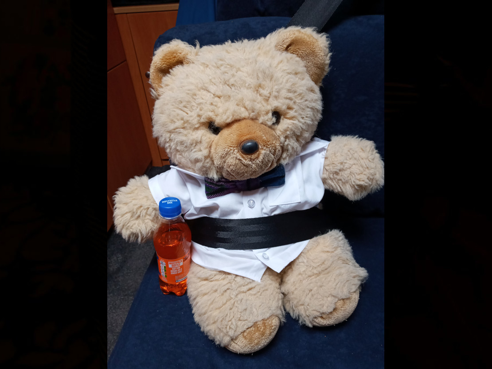
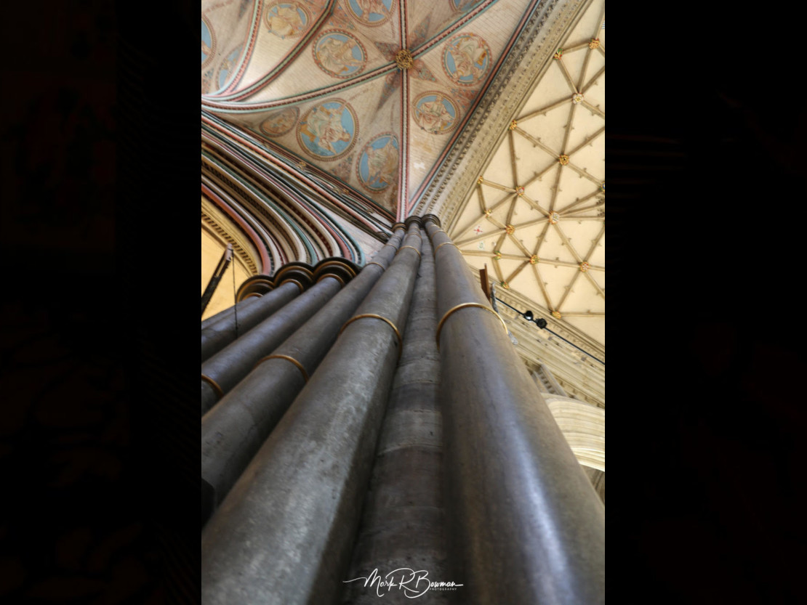

After driving once round Scotland we were again faced with the question of what we were going to do next. Initially, we had wanted to do the West-Highland Way, a six to ten day hike from Glasgow to Fort William. That plan got thrown in the metaphorical bin when Mike and I managed to twist three ankles between us and Mike was not able to walk for more than an hour. We also had more destinations we wanted to see in Scotland, but most of them involved boats that stopped running when the tourist season ended or walks and hikes, so that was out. And then there was Covid. During our NC500 trip, more and more restrictions were being discussed for the UK and the rest of Europe was not faring much better. The last thing we want is to be caught in a lockdown somewhere without a home base.
So after much thought, we followed Mum’s suggestion and went ahead with the rest of our bucket list for England. All of the destinations were south of the Midlands, where the Covid numbers were not looking as bad. We would then see what the situation was like and act accordingly. Flexibility is our jam.
Before heading south we spent a few more days in Linlithgow, where we had an appointment, recuperated, planned and procrastinated so that we could have a few more days of hugs and much-needed mummy love. Where’s the point in being flexible if you’re not going to use it to your advantage?
The week passed by far too quickly before we were off again, this time to Salisbury. Why Salisbury? Well, for one thing, it was right in the middle of all the sites we wanted to look at in that corner of the world. And for another thing, it has some really cool history and architecture that Mike wanted to check out. And most importantly, we wanted to hang out with my adopted cousin and aunt, whom we have not seen in years.
We left before the traffic could get rough, but apparently just late enough to deserve the company of one very well-dressed individual. Just this once we decided to ignore all Covid regulations and give the 25-year-old a lift, even though we risked him depleting our Irn Bru stock in doing so.

The trip, though long, went by without a hitch and soon we arrived and started badgering Mark and his mum, much to their delight. It was a short, but lovely, meeting and more than Mike and I had hoped for, considering all the restrictions.
The next day had us up bright and early to go to our first destination: Stonehenge. At least, it would have been Stonehenge, if looking at the (admittedly fascinating) stone circle from miles away weren’t more expensive than food for a week for the two of us.
So we decided to go to the slightly less hyped stone circle of Avebury. Or rather, circles. The construction consists of one larger ring, set up just on the inside of the henge and nearer to the centre there are two smaller rings. On top of that, there is the West Kennet Avenue, which is an avenue of paired stones that goes over a hill leading to the village.
We parked Atlas down the road from Avebury, just by the avenue and walked through the stones to the henge and village. The stone circles are interrupted by the buildings of the village, which makes the homes feel like they are part of the Neolithic construction. When we got to the outer ring, Mike got very enthusiastic and started hugging the boulders. I think it’s just the stonemason version of a tree hug, but I’ve never actually asked any other stonemasons if they do that, too. It is possible my husband is just a little weird coupled with super adorable.
From what we could read at the village the stone circles of Avebury were set up as a series of projects and at various times during the late prehistory. As for the purpose of them, there is about as much speculation and guesswork as with Stonehenge, ranging from rituals to appease the gods of nature to the position of their axis mundi.
For the afternoon we headed back to Salisbury since we had a date to keep. Mark had been telling us for ages that Mike really needed to see the cathedral of Salisbury and Mike’s expectations were high.
And I am happy to say that he was not at all disappointed. Mike had already heard about the cathedral: apparently, it was the inspiration for the Kingsbridge cathedral in Ken Follett’s “Pillars of the Earth”. But he got quite a surprise when we did a quick preliminary Google search and discovered that the main body of the cathedral had been built in the space of 38 years, which is amazingly fast. Usually, it takes so long to build cathedrals and churches that size that there are different building styles used, but in this case, the whole cathedral is built in early English Gothic architecture.
We discovered more when we actually arrived there with Mark. The cathedral was not actually the first cathedral of Salisbury. The whole settlement of Salisbury used to be on the top of Old Sarum, a hill just at the edge of the current city.
The living conditions were not great on Old Sarum, amongst other reasons because it was very drafty and cold and there was no freshwater source. So eventually they decided to move the location of the cathedral. According to legend, to choose the new building site they had an archer shoot an arrow from the top of the Old Sarum. It flew quite a bit and then hit a deer, which kept on running until it eventually died and that is where they built the new cathedral. The main body of the cathedral was finished in 1258 and the rest of the city made their way down the hill to join it. Old Sarum was mostly abandoned not long after that.
We had been in the cathedral not five minutes when Mike made a new best friend in one of the volunteers, who was only too happy to give him a private tour of the place. He told Mike (and Mark and me when we wandered past) all about how the square tower of the cathedral was actually too big and heavy. It almost made the whole place collapse, but the architects added on various flying buttresses to help stabilize the tower. Having no idea about these kinds of things, I had just assumed that the original architect just really liked pillars, but there you go. You can actually see that the first pillars are not perfectly straight but a bit bent because of the excessive weight if you stand beneath them.

Since Mike talked to the nice gentleman for quite a while, he now knows enough about the cathedral to fill a book or two, but sadly you’re stuck with my abbreviated version of events and facts. Once he had seen his fill, we wandered over to the Chapter House, which has one of only four surviving original copies of the Magna Carta on display.
The Magna Carta is a document drafted and signed by King John in 1215 under pressure from his rebellious barons. It declared the government (royal or otherwise) to be subject to the rule of law and listed the liberties held by free men. The Magna Carta is basically the foundation for individual rights in Anglo-American law and is a forerunner of Parliament, the Declaration of Independence, the U.S. Constitution and the U.S. Bill of Rights. Amongst other things, the right to petition and the concept of due process originate from clauses in the Magna Carta.
Mike and I actually saw a picture of the Magna Carta in Lincoln where another one of the four copies is kept but did not have the opportunity to see the live version of it. So Salisbury was special in that way as well, since we actually got to see a really real original copy hidden away in a little cabin in the Chapter House.
Shout out to Mark for showing us around Salisbury and also for the amazing pictures! Thank you very much!
The next day Mike and I did another history dive, but this time a little further back than 1215. By about 1150 years, all the way back to the Romans. I love anything Roman, something I mostly attribute to my love of Asterix and Obelix, which is why I was very excited to show Mike the city of Bath.
The plan was to spend an afternoon in the Roman Baths of Bath. Since we weren’t sure what traffic would be like, I did not organise anything else for the day trip, figuring that if we did have time after going to the baths, we would do what we do best and just randomly stumble over places that are totally awesome. It is arguable if that actually counts as a plan, but all things considered, it worked out really well.
Since trundling around the country always takes longer in the campervan, we had another early start and actually arrived at Bath a few hours earlier than I had anticipated. So we grabbed something to eat and headed over to the Roman Baths to start our wander from there, getting only slightly lost in the process. Once we arrived the first thing Mike saw was Bath Abbey, something that I had seen on my last visit but had totally and absolutely forgotten about.
I did not think we would be able to go into the Abbey, because… well… Covid. But we would have been perfectly happy just looking at the exterior since it was really beautiful. The building is made from Bathstone and is Perpendicular Gothic architecture. What I particularly love is the west entrance. The arched window itself is gorgeous and has some very detailed carvings around it, including a statue of St. Peter and St. Paul left and right of the door, but what really stands out are the ladders that are chiselled up the west side. There are angels climbing up the stairs, to the top of the Abbey, as a representation of a dream of Jacob mentioned in the Bible.
While admiring the stonemason work, we discovered that there was no booking needed to go into the Abbey, so we spent an hour gaping at the inside. Thanks to the walls being 80% windows and fan vaults adorning the ceilings, it looks pretty enough to have anyone staring. I am told that stonemason-wise the work is very impressive, too, but I have to take Mike’s word on that.
And then our unplanned waiting time was up and we headed back to the Roman Baths. We got an audio guide to go through and listened to all the history information that was given (including commentary by Bill Bryson).
The baths are actually thermae, which is what the large bath complexes built by the Romans were called. But even before the Romans arrived, that spot was special. The Celts used the area as a place of worship for the goddess Sulis. The Romans identified her with their goddess Minerva and built a massive complex to honour her and enjoy the perfectly temperated water of 40° C that they found. They also prayed to Minerva-Sulis and threw coins into the water for her when they had a wish, a lot of which were later found.
You can still see the foundations of the original baths, but the first pool you see, which does not have a roof now, used to be a huge room with a high vault ceiling. During the numerous renovations and rebuildings the large room eventually was turned into the statue-filled terrace we see now. Everything above ground level was built in the nineteenth century as part of a tourist attraction.
Adjacent to the Baths there is the museum, filled with numerous artifacts. This includes a collection of twelve thousand Dinar coins, the largest in the UK; and a part of the original temple structure.
We had a lot of fun running around, listening to all the stories of the past, finding out how the complex was designed and imagining what it was like during the time of Asterix.
On our last day in the area of Salisbury we met up with Mark again and drove to Old Sarum, the original building site of the Cathedral. It’s located on a hill at the edge of the current town and, just like Avebury, has a lot of history. There was a settlement built as early 400 BC to control the intersection of two trading routes nearby. The site was taken over by the Saxons, was used as a stronghold against marauding Vikings and had a castle and a cathedral built by the Normans. Later, a royal palace was built within the castle for King Henry I; and for 300 years it was used by monarchs until there were disputes between the Sheriff of Wiltshire and the bishop of Salisbury, which eventually led to the cathedral being placed down the hill (that was where the deer allegedly died!) and New Salisbury grew around the new cathedral.
Old Sarum was eventually dismantled for the stones and later abandoned. Now there are merely remnants of the old castle and cathedral which indicate where the buildings once stood.

We had a nice walk with Mark around the area and really liked the view of Salisbury from the hill. At the end of which we said our goodbyes to Mark and his corner of the world and headed farther down the road with Atlas and Big Mac the bear.